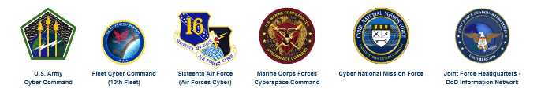

Threat Group 2:
US Cyber Command (USCYBERCOM)
Purpose: USCYBERCOM specializes in offensive cyber operations
Aliases: USCC, Cyber National Mission Force (CNMF)
Known Members: General Paul Nakasone (Commander), Major General Joe
Hartman, Lieutenant General Timothy Haugh
Comprised of several different subgroups as shown below:

Leadership:
Commander Gen. Timothy D. Haugh, USAF

-
Workplace: Fort George G. Meade, Maryland, United States
-
Last Known Address: 8414 Stonehouse Rd, Frederick, Maryland
21702
- Possible Phone Numbers: (407) 217-2557, (202) 288-1571
- Age: 55
LTG William J. Hartman, USA
-
Workplace: Fort George G. Meade, Maryland, United States
-
Last Known Address: Several California addresses
- Possible Phone Numbers: (301) 596-7095
- Age: 58
Cyber-Skills/Specializations:
Skills
- Network exploitation and intelligence gathering
- Malware creation and deployment
- Advanced persistent threat (APT) infiltration techniques
- Distributed Denial of Service (DDoS) attacks
- Social engineering and phishing for initial access
Notable Attack:
Operation Glowing Symphony (2016) targeted ISIS's digital
capabilities, neutralizing their communication channels
-
Disruption of ISIS's Communication Channels: ISIS was heavily
reliant on social media platforms, encrypted messaging apps, and
websites
-
Motivation: By erasing ISIS's online footprint, the US aimed to
reduce the group's influence, recruitment success, and operational
cohesion
-
Motivation: Shows the prowess of the USA's cyber abilities to
dissuade further trouble
Detect and Track:
Detection
-
Detection can involve monitoring for USCYBERCOM's distinctive use of
advanced encryption and exploitation techniques in network traffic.
-
Behavioral Analytic: USCYBERCOM often employs advanced, covert
techniques to access and infiltrate networks without detection.
-
Threat Intelligence Integration: Collaborating with
organizations like NATO CCDCOE, CISA, and other NATO-aligned cyber
defense organizations.
Track
-
Threat Actor Profiling: Regularly update profiles on USCYBERCOM’s
attack methods, operational targets, and known infrastructure.
-
Honeypots and Deception Technologies:Deploy honeypots tailored to
USCYBERCOM’s typical targets to attract and study their operations.